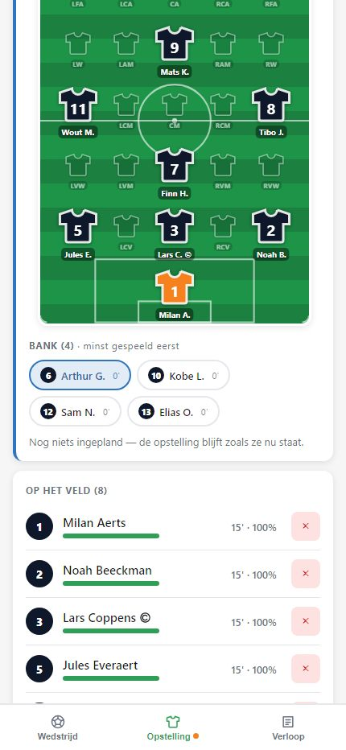
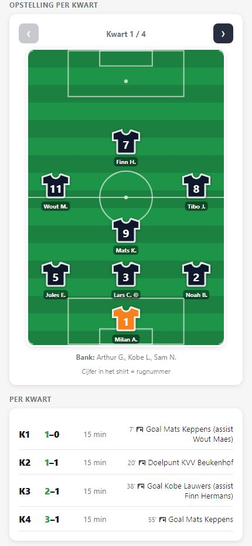
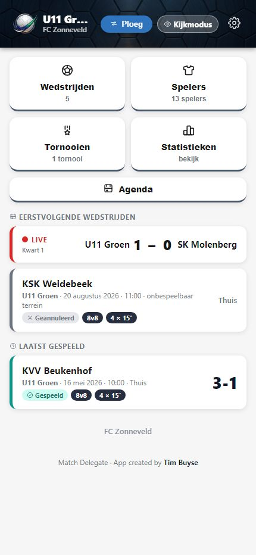

Wat er vandaag mis is
Elke trainer houdt het op zijn eigen manier bij: een schriftje, een blad in de tas, een berichtje na de match. Daardoor valt er niets te vergelijken tussen ploegen, en als een trainer stopt, verdwijnt zijn manier van werken met hem.
En de vraag die elk seizoen terugkomt — speelt mijn zoon wel genoeg? — beantwoordt u vandaag met een gevoel in plaats van met een cijfer.
Van de kalender tot het verslag
Live, aan de zijlijn
Doelpunten, wissels, kaarten en positiewissels: één tik, met de juiste speeltijd eronder. Werkt ook als het netwerk op het veld wegvalt.
Kwart per kwart
De opstelling van elk kwart plant u vooraf, met de spelers op hun plek op het veld. Tijdens de match wijkt u ervan af zoals het valt.
De kalender inlezen
De wedstrijdkalender komt binnen uit een agendabestand of uit Excel — ook een export van Foot24. Niemand hoeft nog wedstrijden over te typen.
Ook voor tornooien
Een tornooidag met meerdere korte wedstrijden houdt u in één geheel bij, met een verslag per tornooi.
Eerlijke speeltijd, meetbaar
Per speler de effectief gespeelde minuten, over de hele match en het hele seizoen. De bank staat gesorteerd met wie het minst gespeeld heeft bovenaan, zodat u het ziet op het moment dat u de wissel maakt — niet pas achteraf.

Verslag en overzicht
Na de match staat het verslag klaar: de opstelling van elk kwart, de stand per kwart, en elk doelpunt met de minuut en de assist erbij. Te delen als PDF, en per seizoen ook uit te voeren naar Excel.

Ouders kunnen meekijken
Wie thuis blijft, volgt de stand live mee in kijkmodus, zonder iets te kunnen wijzigen en zonder account als het moet. De club bepaalt per ploeg wat meekijkers te zien krijgen.

Wie wat doet
- Eén factuur voor de club, geen abonnement per trainer.
- Alle functies inbegrepen, ook het cluboverzicht.
- Een vast bedrag voor de hele club vanaf tien ploegen.
Eerste clubs gezocht
Een half seizoen proefdraaien, kosteloos en zonder verbintenis: drie tot vijf ploegen gebruiken de app tot de kerstperiode, met één iemand van de club die de ploegen beheert. In januari bekijken we samen of het iets opleverde — en pas dan komt de vraag of de club verder wil.
Ik kom het één keer ter plaatse uitleggen aan de trainers en afgevaardigden, en ben tijdens de piloot bereikbaar.
Neem contact opOver de gegevens van de spelers
Het gaat over kinderen, dus dit staat er zwart op wit. Van een speler houdt de app alleen de naam bij, en optioneel het rugnummer en de positie. Geen geboortedatum, geen adres, geen telefoonnummer, geen foto's en niets medisch — die velden bestaan niet.
De gegevens staan in een databank in het datacenter van Google in Saint-Ghislain, dus in België. Ze blijven eigendom van de club: ik verwerk ze enkel in haar opdracht, en bij de start van een samenwerking leg ik dat vast in een verwerkersovereenkomst. Een trainer ziet alleen zijn eigen ploeg.
Er zijn geen andere partijen bij betrokken: geen reclame, geen statistiekendiensten, geen doorverkoop.